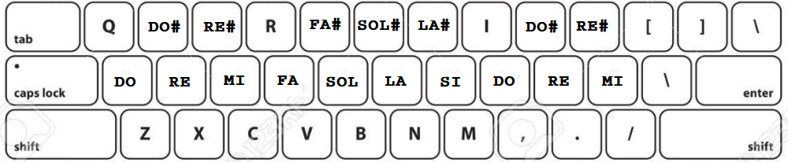

Sobre el Sinte y cómo usarlo
Esta idea de sintetizador sigue en desarollo y esta hecho con JavaScript (utilizando la Web Audio API), html y css. Es un ejercicio de programación pero tambien uno sobre sintesis.
- Para empezar a jugar, si tocas el boton "preset random", te configura los parámetros en una de cinco posibilidades que programé :)
- Luego podes empezar a jugar con los parámetros desde ahí.
- Cambio de frecuencia de los osciladores:
- Con el slider del input "Freq"
- Tocando con el teclado qwerty (en desktop)

No es necesario mantener las teclas presionadas! si lo haces, se produce un descenso en volumen, no esta roto, es asi :) - Se puede variar un poco la afinación con el input "detune", 50 cents hacia arriba o hacia abajo (50 cents = 1/4 de tono);
- Cada oscilador se puede cambiar de octava independientemente.
- El sintetizador cuenta con tres osciladores que pueden prenderse o apagarse independientemente, a los cuales se les puede modificar la forma de onda (sinusoide, triangular, cuadrada o diente de sierra), también el volumen, la octava y la nota. Los osciladores pasan por un filtro que puede ser LP, BP o HP, con controles de CutOff y Resonancia. El LFO tiene parámetros de forma de onda, rate y amount y la posibilidad de modular tres parametros: la frecuencia de corte del filtro, el pitch del OSC I y/o el pitch del OSC II. Finalmente hay un delay y luego el volumen Master.
- Si en el OSC III es tildada la casilla "free", su frecuencia no se va a modificar con el teclado junto con la de los otros dos osciladores, quedando en la ultima que fue ingresada (la cual se puede modificar a traves del input "Freq").
- Se puede reducir el zoom de la ventana del navegador si es necesario para poder visualizar todos los controles.
- Los controles se pueden manipular tambien solo con el teclado, usando la tecla TAB para desplazarse, las flechas del teclado para incrementar/disminuir, y el enter para ingresar en los selectores de onda por ejemplo.